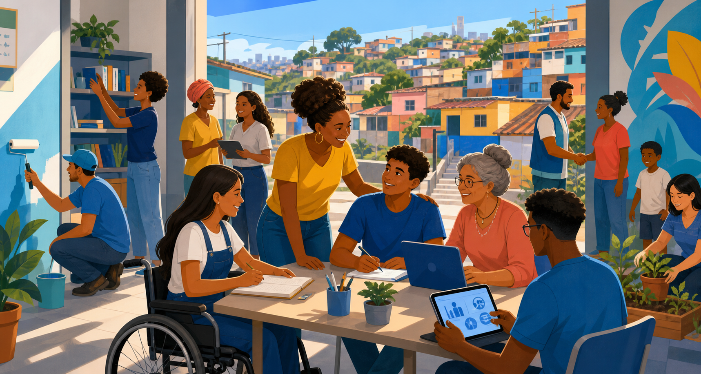

Formação
Capacitação de líderes sociais para ampliar a gestão e o impacto das organizações locais.
Transformação social em rede
Conheça iniciativas que conectam lideranças, tecnologia e oportunidades para apoiar o desenvolvimento de comunidades brasileiras.

Como atuamos
Capacitação de líderes sociais para ampliar a gestão e o impacto das organizações locais.
Ações integradas de moradia, renda, educação, saúde e cidadania construídas com a comunidade.
Ferramentas digitais que aproximam pessoas, parceiros e oportunidades de transformação.
Compromisso
Esta plataforma acadêmica foi planejada com estrutura semântica, navegação por teclado, contraste adequado e formulários com mensagens compreensíveis.